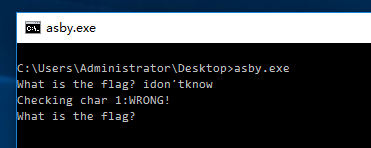
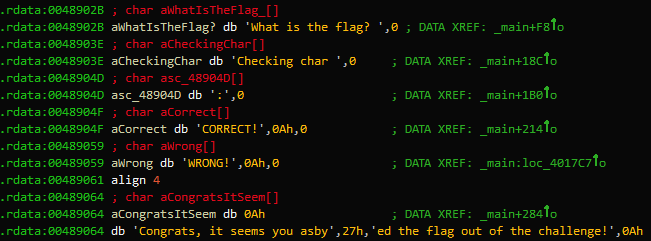
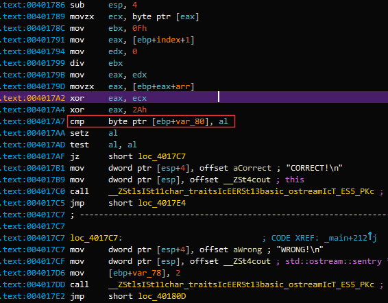
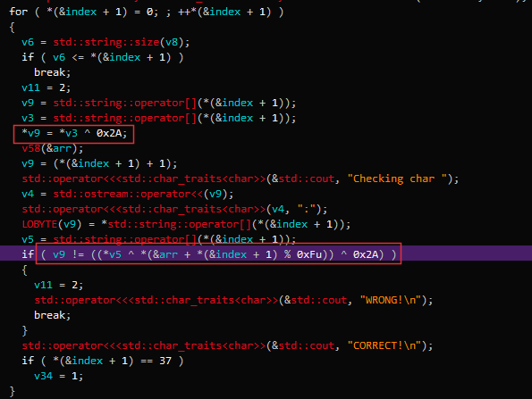
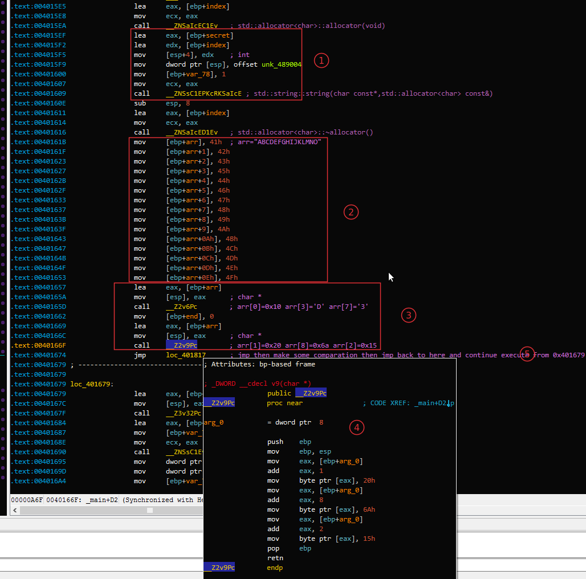
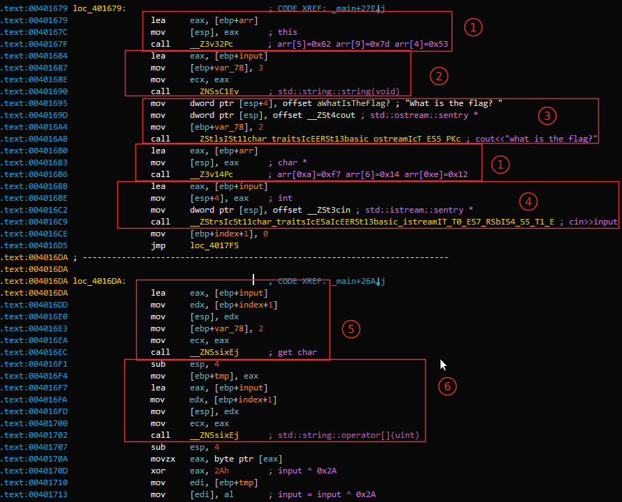
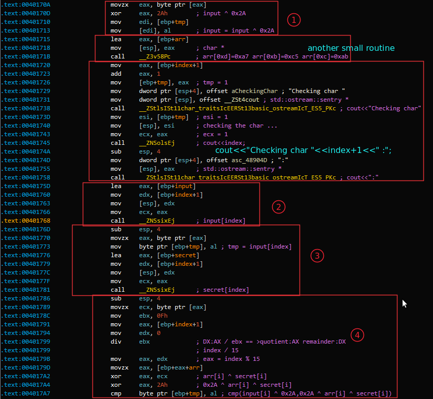
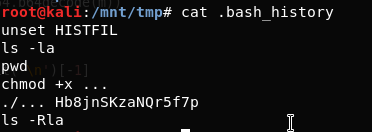
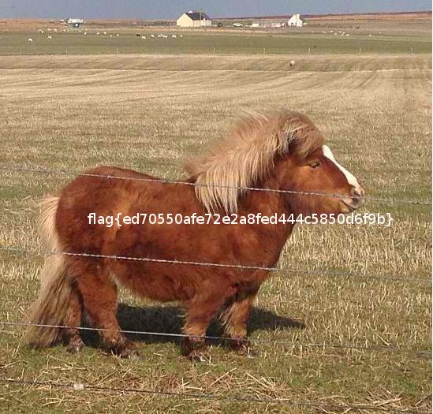

Some writeups for SHACTF-2017 just for the purpose of learing. You could download the attachment from here.
Host:Ubuntu 16.04 x64
Virtual Machine:Virtual Box / Ubuntu 16.04 Server / Kali Linux installed in Virtual Box
Tools: GDB/IDA Pro 6.8
Eindbazen team member asby has by far been putting the most energy and time in creating the SHA2017 CTF. To honor his dedication and all his effort we created this challenge as an ode to him. You can choose to reverse engineer this challenge or you can "asby" it. Good luck with the option you choose.
Download the attachment asby.tgz and uncompress it we get a win32 application named asby.exe.I throw it into the powerful IDA disassmebler and begin to analyze it.
In general,dynamic analysis will help us get the flag quickly. Here,let we run the program firstly:
As the image showed above,some interesting strings show up! Press shift+F12 in IDA to open Strings Windows,then we find those strings in IDA,showed as following image:
We could locate where the string 'WRONG' is used through the crossed reference supplied by IDA,then we are guided to here:
Then we know here is the key location where the program will check if we have got the right char.For quickly understanding the codes,we could press F5 to open the pseudocode window:
So,we could easily figure out the input is xored with 0x2A then is compared to something unknowed stuff which is also xored with 0x2A. However,it is not necessary to know the unknow is what exactly. We can set a conditional breakpoint in the location where the comparation happens(here is 0x4017A7). Codes for conditional breakpoint is as follow:
import idc
import idautils
import idaapi
eax = idc.GetRegValue("EAX")
print chr(eax ^ 0x2A)
Then we now could run the program and input some random char and get corrsponding right char,showed as the following short video(2.5 MB):
Everytime you input a wrong char,the output window of IDA will give you the right char.Repeat this process until all the right char has given,then you have the flag.
The routine is not complex so we could figure out what it does without running it.OK lets begin!
Firstly,we can find the main function of asby.exe.This is a easy task, a clever guy like you will finish it without striking a blowing,right? Now we are in main function,lets find out what the program does step by step through reading the assembly codes.
1: The codes move a unknowned data block unk_489004 to a local string variable which I rename it to secret. Notice that unk_489004 is passed as the first argument and index the second argument.After the string constructor is called,secret holds the data block.
2: Here is an arrary with a length of 0xF initilized with the value "ABCDEFGHIJKMLMNO". We should not be confused with these values since they will be changed in some small routine function looking like __Z2v[xx]Pc.I rename the array to arr.
3,4: Yeah,a small routine function named __Z2v9Pcappears here,its codes is showed in the float window which marked as 4.We could easily figure out that this small routine changes the array's values at index 1,8,2 to 0x20,0x6A,0x15,respectively.
5: As the comments point out,we in fact do not need to care this long jmp because it is just to check if the upper bound is reached and then will come back and continue from loc_401679.
OK,Next one is showed as below:
1: Small routines to change the value of arr. The first one sets arr[5] = 0x62,arr[9] = 0x7d,arr[4] = 0x53,the second sets arr[0xa] = 0xf7,arr[6]=0x14,arr[0xe]=0x12.
2: Initilize the input string variable which is used to store the string user inputs.
3: Well, cout<<"what is the flag?"
4: cin>>input
5,6: I am not sure what is the enssential difference between 5 and 6, they seem action as the same role being responsible for getting the current char from user's input.
Now,the last step! We will reveal the hidden secret!
1: The codes get the current char of the user's input and xor the char with 0x2A then assign the xored value back to the input.Notice that what tmp stored is the address of the current processing char of the input string.
2,3: Get corresponding char from input and secret at location index.
4: We know that the length of arr is 0xF.From the instruction div ebx;mov eax,edx we get that eax = index % 15, then eax is used as a new index,say it i,to retrive a char from arrary arr.
Now the decode logic is clear:
Firstly:Initilizing arr with its real values which could be summrized as below:
v6 : arr[0]=0x10 arr[3]=0x44 arr[7]=0x33 v9 : arr[1]=0x20 arr[8]=0x6A arr[2]=0x15 v32: arr[5]=0x62 arr[9]=0x7D arr[4]=0x53 v14: arr[0xA]=0xF7 arr[6]=0x14 arr[0xE]=0x12 v58: arr[0xD]=0xA7 arr[0xB]=0xC5 arr[0xC]=0xAB
Secondly:xoring the input[i] with 0x2A and assign the result back.
Thirdly:xoring arr[i % 0xF] with secret[i]
Finally:comparing input[i] ^ 0x2A with arr[i % 0xF] ^ secret[i] ^ 0x2A .
All is over? Nope! Why? But how long is the for loop? Well,if you scroll the assembly codes down a little,you will find a line codes looking like cmp [ebp+index+1], 25h. Yeap,this is the final index of the for loop. OK,Now everthing goes well so let we write a segment code of Python to get the flag:
#! /usr/bin/env python3
#! -*- coding:utf-8 -*-
import re
rawsecret = '''
76 4C 74 23 28 52 26 07 08 1C 96 FD CA C4 22 23
45 73 76 61 04 70 57 0F 4B C6 A6 9B C1 23 21 10
23 7D 35 50 72 4E
'''.replace('\n','').replace(" ",'')
secret = re.findall('.{1,2}',rawsecret)
rawarr = "10 20 15 44 53 62 14 33 6A 7D F7 C5 AB A7 12".replace(' ','')
arr = re.findall('.{1,2}',rawarr)
for i in range(0x25+1):
print(chr(int(arr[i % 0xF],16) ^ int(secret[i],16)),end = '')
print()
Run the codes listed above and it will give you the flag:
flag{024baa8ac03ef22fdde61c0f11069f2f}Posted on 2017-10-29
My daughter Kimberly her computer got hacked. Now she lost all her favorite images. Can you please help me recover those images?
So,this is a forenisic challenge,firstly let's uncompress the .tgz file:
root@kali:~# tar zxvf wannafly.tgz kimberly.img
and look what exactly kimberly.img is:
root@kali:~# file kimberly.img kimberly.img: Linux rev 1.0 ext4 filesystem data, UUID=56e89f54-c4da-4c5e-a3c6-67398d341788 (extents) (large files) (huge files)
Well,not so bad,it is an ext4 filesystem data,mount it:
root@kali:~# mount -t ext4 -o loop kimberly.img /mnt/tmp/ cd /mnt/tmp
Now let see what is hold in the mouted file system,we use tree command with -a option to show all possible files:
root@kali:~# tree -a /mnt/tmp/ /mnt/tmp/ ├── ... ├── .bash_history ├── .cache │ └── motd.legal-displayed ├── Desktop ├── Documents ├── Downloads ├── lost+found ├── Music ├── Pictures │ ├── 78d14f37ae413511b119776c2294c414.png │ ├── 8210680-Palomino-Shetland-pony-Equus-caballus-3-years-old-standing-in-front-of-white-background-Stock-Photo.png │ ├── 8210722-Palomino-Shetland-pony-Equus-caballus-3-years-old-standing-in-front-of-white-background-Stock-Photo.png │ ├── bay_pony_cantering_2_by_tamacilo.png │ ├── bay_pony_rolling2_by_tamacilo.png │ ├── connemara_pony2_750.png │ ├── dappled-pony.png │ ├── f09086061f03f080d0851d9154e11653.png │ ├── Het-verschil-tussen-een-pony-en-een-shetland-pony.png │ ├── oli.png │ ├── Peppermint-Pony.png │ ├── pony.png │ ├── pony_shutterstock_50279794.png │ ├── shetlander-pony.png │ ├── shutterstock_146544482-680x400.png │ ├── white-pony-951772_960_720.png │ └── Wild_Pony_Assateague.png ├── Public ├── Templates └── Videos
Look it carefully,you will notice that there are two interesting files ..., .bash_history and a directory .cache. Let we cat the .bash_history file, and we have these stuffs:
You will immediately notice that a weird string Hb8jnSKzaNQr5f7p appears. Without any hesitation,we open the file ...,it turns out that the file is a python script.The code is a few long,so I just select a snippet and put it here:
def get_iv():
iv = ""
random.seed(int(time()))
for i in range(0,16):
iv += random.choice(string.letters + string.digits)
return iv
# m:plaintext p:key == Hb8jnSKzaNQr5f7p
def encrypt(m, p):
iv=get_iv()
aes = AES.new(p, AES.MODE_CFB, iv)
return base64.b64encode(aes.encrypt(m))
def decrypt(m, p, i):
aes = AES.new(p, AES.MODE_CFB, i)
return aes.decrypt(base64.b64decode(m))
def encrypt_image(img):
data = open(img, 'r').read()
# Open original data and encrypt
encrypted_img = encrypt(data, sys.argv[1])
blurred_img = open('/tmp/sha.png', 'r').read()
# Zeros the original image
stat = os.stat(img)
with open(img, 'r+') as of:
of.write('\0' * stat.st_size)
of.flush()
# The encrypted image is appended to the tail
open(img, 'w').write(blurred_img + "\n" + encrypted_img)
if __name__ == '__main__':
if len(sys.argv) != 2:
print "Usage: %s " % sys.argv[0]
else:
encrypt_images()
I have added some comments into it.The code shows us that the author has encrypted the original image with three part in order: data of blurred image + a line feed character + base64 encoded data with AES encryption of the original image.
The first thing we should do is to extract the encrypted data of the original image.
We know that base64 is consist of 64 printable characters:alphabet(a-zA-Z),numbers(0~9) and two optional equation symbols which are depended on the system(they are '/' and '+' in most of the time).Anohter one optional symbol is "=" which are used to pad the base64 string if necessary.
For this reason,we could regard '\n' as a boundary and split the encrpyted image with '\n' and get the last element. The code is as below:
def get_encrypted_data(img):
with open(img,'r') as _:
return _.read().split('\n')[-1]
In AES CFB encryption,there are three input: key,iv,plaindata.To decryption, three paramters is needed: the same key as the input,key,the same iv as the input,cipherdata.
From the .bash_history file we could get the encryption key is Hb8jnSKzaNQr5f7p,cipherdata could be extracted.But how to get the iv? If we examine the encryption code,we can figure out how the iv is generaged.The author used a "current" time as random's seed. If we could find out what is the time when the code encrypted the image then we are able to get the same iv! How to find time info of the image,you can use stat command in linux and os.stat() in python.Notice that you should retrive change or modify time but not access time. The retrived time is roughly closed to the real encryption time,so we plus/minus a delta time value in the rough time to produce an interval including the real time:[rough time - delta,rough time + delta]. For each time value(epoch),we check if the first four bytes are PNG image signature,if it dose then we find a real iv value so we can decrypt the image.
The solution code is as follow:
#!/usr/bin/env python
import random, string, sys, os
from time import time
from Crypto.Cipher import AES
import base64
import struct
def get_iv(epoch):
iv = ""
random.seed(epoch)
for i in range(0,16):
iv += random.choice(string.letters + string.digits)
return iv
# m:encrypted message p:key,Hb8jnSKzaNQr5f7p i:iv
def decrypt(m, p, i):
aes = AES.new(p, AES.MODE_CFB, i)
return aes.decrypt(base64.b64decode(m))
def get_encrypted_data(img):
with open(img,'r') as _:
return _.read().split('\n')[-1]
def find_images():
i = []
#for r, d, f in os.walk(os.environ['HOME']):
for r, d, f in os.walk("."):
for g in f:
if(g.endswith(".rec.png")):continue
if g.endswith(".png"):
i.append((os.path.join(r, g)))
return i
def solve():
for i in find_images():
encrypted_data = get_encrypted_data(i)
ctime = int(os.stat(i).st_ctime)
beg = ctime - 60
end = ctime + 60
print "There are %d times loops ... " % (end - beg)
epoch = beg
print "Images : %s" % i
while epoch >= end:
iv = get_iv(epoch)
data = decrypt(encrypted_data,"Hb8jnSKzaNQr5f7p",iv)
d = struct.unpack("Bccc",data[0:4])
meta = ''.join(d[1:4])
if('PNG' == meta):
open(i + ".rec.png","w").write(data)
print "Restore is Done!"
break
epoch += 1
if __name__ == '__main__':
solve()
After the decryption,we can browser the decrypted images,we find the flag is this image:
Posted on ???
TODO
I will continue to write binary,pwn,crypto writeups of sha2017 ctf if I have time.
Stay tuned!
Posted on ???
TODO
I will continue to write binary,pwn,crypto writeups of sha2017 ctf if I have time.
Stay tuned!